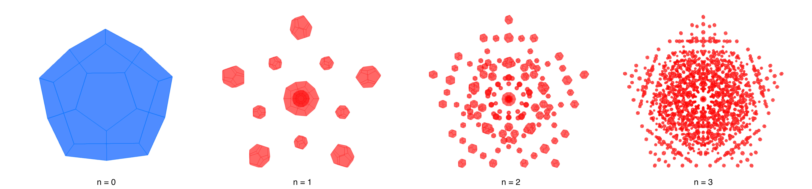

Dodecahedron Patterns
Please explain about your project here and put an image that shows some design iterations like the one below. Note that it needs to be one single image. Please combine some shots from different design iterations. The following text is only a random example. This geometry consists of rectangles spaced 1m apart along the x-axis. The rectangles have the same height and width but their orientation angle changes by a total of 90 degrees along the length of the resulting geometry, this creates a twist.

Please explain a bit about the follwing flow-chart that describe your algorithm. The follwing is only a random flowchart as an example.

Use the "distance"-sylider to change the distance between dodecahedrons. With the "iterations"-slider you can choose the desired number of iterations.